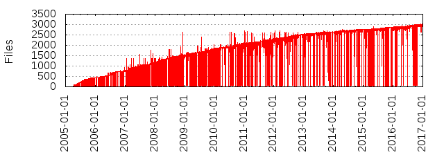

Files
- Total files
- 3023
- Total lines
- 856349
- Average file size
- 8030.36 bytes

| Extension | Files (%) | Lines (%) | Lines/file |
|---|
| 632 (20.91%) | 39929 (4.66%) | 63 |
| 0-1 | 1 (0.03%) | 6 (0.00%) | 6 |
| 0-2 | 1 (0.03%) | 7 (0.00%) | 7 |
| 0-3 | 1 (0.03%) | 8 (0.00%) | 8 |
| 1 | 1 (0.03%) | 511 (0.06%) | 511 |
| 1-0 | 1 (0.03%) | 6 (0.00%) | 6 |
| 1-2 | 1 (0.03%) | 8 (0.00%) | 8 |
| 1-3 | 1 (0.03%) | 8 (0.00%) | 8 |
| 2-0 | 1 (0.03%) | 7 (0.00%) | 7 |
| 2-1 | 1 (0.03%) | 8 (0.00%) | 8 |
| 2-3 | 1 (0.03%) | 7 (0.00%) | 7 |
| 3-0 | 1 (0.03%) | 8 (0.00%) | 8 |
| 3-1 | 1 (0.03%) | 8 (0.00%) | 8 |
| 3-2 | 1 (0.03%) | 7 (0.00%) | 7 |
| Git | 1 (0.03%) | 15 (0.00%) | 15 |
| NUL | 1 (0.03%) | 7 (0.00%) | 7 |
| PL | 1 (0.03%) | 62 (0.01%) | 62 |
| README | 1 (0.03%) | 12 (0.00%) | 12 |
| S | 1 (0.03%) | 224 (0.03%) | 224 |
| ac | 1 (0.03%) | 1201 (0.14%) | 1201 |
| bash | 1 (0.03%) | 2921 (0.34%) | 2921 |
| c | 385 (12.74%) | 210678 (24.60%) | 547 |
| cnf | 1 (0.03%) | 8 (0.00%) | 8 |
| cocci | 6 (0.20%) | 225 (0.03%) | 37 |
| conf | 3 (0.10%) | 347 (0.04%) | 115 |
| config | 1 (0.03%) | 37 (0.00%) | 37 |
| css | 2 (0.07%) | 982 (0.11%) | 491 |
| diff | 18 (0.60%) | 100 (0.01%) | 5 |
| dump | 12 (0.40%) | 5524 (0.65%) | 460 |
| el | 2 (0.07%) | 2189 (0.26%) | 1094 |
| example | 1 (0.03%) | 101 (0.01%) | 101 |
| expect | 15 (0.50%) | 121 (0.01%) | 8 |
| export | 1 (0.03%) | 406 (0.05%) | 406 |
| git | 8 (0.26%) | 52 (0.01%) | 6 |
| git_one | 4 (0.13%) | 14 (0.00%) | 3 |
| go | 4 (0.13%) | 558 (0.07%) | 139 |
| gpg | 1 (0.03%) | 142 (0.02%) | 142 |
| h | 162 (5.36%) | 24997 (2.92%) | 154 |
| icns | 1 (0.03%) | 21 (0.00%) | 21 |
| ico | 1 (0.03%) | 857 (0.10%) | 857 |
| in | 8 (0.26%) | 120 (0.01%) | 15 |
| js | 7 (0.23%) | 1613 (0.19%) | 230 |
| log_master | 1 (0.03%) | 34 (0.00%) | 34 |
| m4 | 1 (0.03%) | 40 (0.00%) | 40 |
| master | 9 (0.30%) | 1083 (0.13%) | 120 |
| master^ | 4 (0.13%) | 404 (0.05%) | 101 |
| master^^ | 1 (0.03%) | 62 (0.01%) | 62 |
| mbox | 2 (0.07%) | 768 (0.09%) | 384 |
| mboxrd | 1 (0.03%) | 19 (0.00%) | 19 |
| md | 1 (0.03%) | 61 (0.01%) | 61 |
| multiple | 1 (0.03%) | 104 (0.01%) | 104 |
| netrc | 1 (0.03%) | 13 (0.00%) | 13 |
| patch | 18 (0.60%) | 2252 (0.26%) | 125 |
| perl | 28 (0.93%) | 27672 (3.23%) | 988 |
| php | 2 (0.07%) | 249 (0.03%) | 124 |
| pl | 14 (0.46%) | 1964 (0.23%) | 140 |
| plist | 1 (0.03%) | 30 (0.00%) | 30 |
| pm | 18 (0.60%) | 9413 (1.10%) | 522 |
| png | 4 (0.13%) | 31 (0.00%) | 7 |
| po | 46 (1.52%) | 206237 (24.08%) | 4483 |
| pot | 3 (0.10%) | 16222 (1.89%) | 5407 |
| py | 5 (0.17%) | 8410 (0.98%) | 1682 |
| rc | 1 (0.03%) | 22 (0.00%) | 22 |
| rst | 5 (0.17%) | 337 (0.04%) | 67 |
| sample | 10 (0.33%) | 520 (0.06%) | 52 |
| sh | 888 (29.37%) | 185425 (21.65%) | 208 |
| show_side | 1 (0.03%) | 38 (0.00%) | 38 |
| side | 13 (0.43%) | 484 (0.06%) | 37 |
| simple-f | 1 (0.03%) | 59 (0.01%) | 59 |
| supp | 1 (0.03%) | 51 (0.01%) | 51 |
| t | 7 (0.23%) | 167 (0.02%) | 23 |
| tar | 3 (0.10%) | 8 (0.00%) | 2 |
| tcl | 40 (1.32%) | 12372 (1.44%) | 309 |
| tcsh | 1 (0.03%) | 126 (0.01%) | 126 |
| two-ranges | 1 (0.03%) | 102 (0.01%) | 102 |
| txt | 575 (19.02%) | 87069 (10.17%) | 151 |
| txt,v | 6 (0.20%) | 324 (0.04%) | 54 |
| txto | 2 (0.07%) | 18 (0.00%) | 9 |
| uname | 1 (0.03%) | 593 (0.07%) | 593 |
| xsl | 7 (0.23%) | 124 (0.01%) | 17 |
| yml | 1 (0.03%) | 123 (0.01%) | 123 |
| zip | 2 (0.07%) | 5 (0.00%) | 2 |
| zsh | 1 (0.03%) | 225 (0.03%) | 225 |